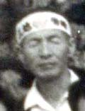
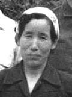

三池炭鉱 - 名もなく去っていった者たち -（2006年4月4日 まえかわ）

父 楠元辰雄、明治44年8月、鹿児島県出水市生まれ。母 貞枝、大正7年2月、香川県坂出市生まれ。二人はそれぞれに
農業開拓団として台湾へ赴き、そこで見合結婚。
しばらく父は単身で三池炭鉱三川鉱の採炭夫として働いた。母は重箱に鮮魚を詰めて売り歩いた。ヤミ取締りの眼をごまか
すためだったと母が話してくれたことがある。  昭和28年5月12日、三池労組の指導を得て炭鉱主婦連絡協議会（略称・炭婦協）が結成された。そのころすでに、会社側に よる婦人会が存在していたので、会社は炭婦協の結成にやっきになっていた。「炭婦協に入ったりしてやりすぎるとご主人の 首が危なくなりますよ」などと会社の職制ににらまれながらの結成だった。そんな中、母は炭婦協三川支部若葉分会の副分会 長として動き回った。
昭和30年ころ、荒尾市立第三中学校を卒業した長兄は三池炭鉱の三井三池鉱業学校を受験した。しかし、結果は不合格。
その年の昭和34年12月、三井鉱山は三池炭鉱労働組合活動家中心の1492名に対し退職を勧告。これに対し210名は早期退職に
応じたが、残りは勧告を拒否。会社側は退職に応じない者は指名解雇すると通知。これにより組合は本格的なストに入り、三池
闘争が始まる。
父母は長兄と姉が先に住む岐阜県へ転出を決意。私が小学校2年生の終わり、次兄が5年生終わりの頃だった。三池闘争が
終了した翌年の昭和36年3月、私たち一家は岐阜県土岐市へ発つことになる。 岐阜では母が、「父ちゃんが三池炭鉱で働きよったこつば誰にも言うたらでけん」と私たち子どもに言ったことがあった。当時、 なぜ母がそんなこと言うのか、わからなかったが、今思えば、炭鉱に対する偏見と差別と、三池争議で首を切られた元活動家と いうイメージを持たれることを恐れていたのかも知れない。だからというわけではなく、ただ機会がなかっただけかも知れない が、私は結婚するまでは一切自分のふるさとのことを人に語ったことはない。 昭和38年11月、三井三池三川坑が炭じん爆発した。両親はその新聞記事を見ながら、「あの人も死んだ、この人も死んだ」と ささやきあっていた。父も解雇されなかったらその日は坑内へ下がっているはずだった。「父ちゃん、首になってよかったんよ。 あのまま勤務していたなら、あんたも死んでたばい。」と母が父に話していたのを覚えている。 その翌年の昭和39年3月、京都へ引っ越した。引っ越したその理由はわからない。両親は紡績会社の寮に住込みで働いた。父は 寮の風呂焚きをしながらよく「炭掘る仲間」をハーモニカで吹いていた。子供心にその「炭掘る仲間」が物悲しかった。父は また、「こげん寒かとこ来るとじゃなかった」とよく愚痴った。「何を今さら」と母は怒った。そんな父親に私はよく反抗した。
しかし、そんな父も昭和48年1月10日、病死した。61歳。肺がんだった。その手術後、母を除く私と次兄のふたりが医者から
呼ばれて、「お父さんの肺は真っ黒でしたがよくたばこを吸われたのですか。お気の毒ですが末期がんです。」と言われた。
「いや、たばこは全く吸いませんでしたが、炭鉱で働いていた」と答えると、「ああ、それでか」と医者はつぶやき一人納得
していた。いま思えば、父はじん肺を患っていたのかも知れない。ただその頃はまだ「じん肺」という言葉も聞いたことがな
かった私たちだった。 母は一度、岐阜にいる時に荒尾の仲間たちの所へ帰ったことがある。しかし父は結局一度も九州へは帰らなかった。父は 病院のベッドの上で「いま九州へ行ってきた。とても懐かしかった。」と言ったこともあった。帰りたくなかったのか、帰れ なかったのか、どちらだったのかは知らないが、本当は父もふるさとへ帰りたかったに違いない。 父が亡くなるとしばらくして、私は愛知県へ就職。その間に母は滋賀県彦根市へ引っ越した。そしてまたしばらくすると 福井県鯖江市へ引っ越して行った。そして昭和56年4月1日、車に跳ねられて死んだ。64歳だった。自分の家を持ちたいと常々 言っていた母だったが、ついにその夢はかなわなかった。しかしその事故の補償で長兄は中古ながら家を買った。皮肉な話で ある。
平成9年3月30日、三井三池炭鉱は124年の歴史に終止符を打ち閉山した。このニュースはマスコミを賑わせ、組合の主だった
人たちの武勇伝（？）が新聞や本で紹介されるようになった。しかし、三池争議で解雇された多くの人たちはあまり話題に
されることはなかった。自分の両親のことも含めて、「この人たちのその後はどうだったのか、どこへ去って行ったのか、
負け組だったのか」、「それはあんたのひがみバイ」と言われればそれまでだが、手元に残る三池闘争時の親の写真を眺め
ながら、私はそういうことを思った。
一昨年の夏、私はフラリと、かつて自分が通っていた荒尾市立緑ヶ丘小学校の門をくぐっていったことがある。これまで
何度も学校正門前までは行ったことはあったが、中へ入ったのは初めて。43年ぶりだった。
誰が書いたのか、三池には、「やがてくる日に / 歴史が正しく書かれるやがてくる日に / 私たちは正しい道を進んだと
いわれよう / 私たちは正しく生きたといわれよう / 指は貧乏で節くれだっていたが / そのまなざしは / まっすぐで美し
かったといわれよう」という有名な詩がある。
|